1Unit 3.1 | DOK 1
For the system $y=2x+1$ and $y=-x+7$, what does the ordered pair where the two lines cross represent?
meaning of intersection:
For the system $y=2x+1$ and $y=-x+7$, what does the ordered pair where the two lines cross represent?
In the system $y=3x-4$ and $\;2x+y=11$, which expression should replace $y$ during substitution?
For $y\ge 2x-1$, should the boundary line be solid or dashed, and should the solution region be above or below the boundary?
A point satisfies the first constraint but not the second in a system of inequalities. Is the point feasible? Explain using the idea of satisfying all constraints.
Graph the system on the same axes, then state the point of intersection.
$$\begin{aligned}y=x+1\\y=-x+7\end{aligned}$$
Solve by substitution. State the ordered pair.
$$\begin{aligned}y=2x+1\\x+y=13\end{aligned}$$Adult tickets cost $12 and student tickets cost $8. A group sells 95 tickets for $920. Let $a$ be adult tickets and $s$ be student tickets. Write and solve a system for $a$ and $s$.
Identify the boundary type for $y\ge x-3$, then graph the solution region.
The graph shows the costs of two plans over time. Use the graph, then write equations for the two plans and explain what the intersection means in context.
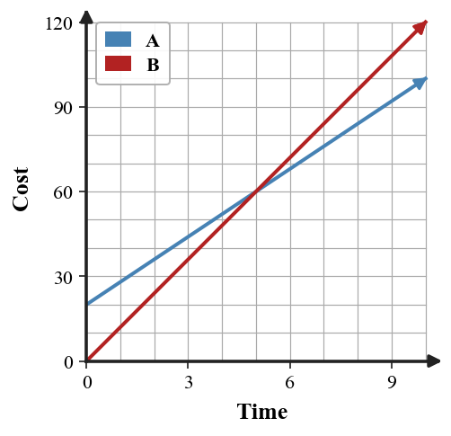
Two students analyze this system.
$$\begin{aligned}y\le -x+8\\y\ge 2x-1\end{aligned}$$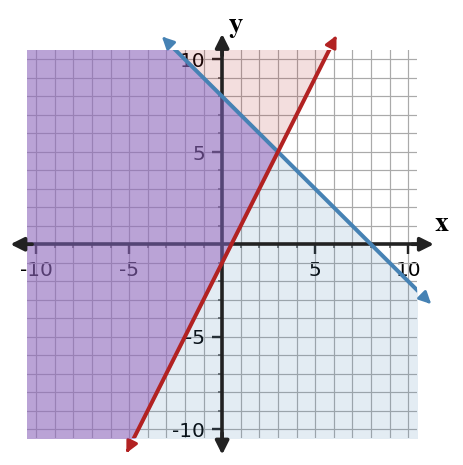
Ava graphs first. Ben tests candidate points first. Compare the two methods for finding whether $(2,4)$ and $(4,3)$ are feasible, and decide which is more efficient for only those two points.
For the system $y=x+4$ and $y=-2x+10$, what does the ordered pair where the two lines cross represent?
In the system $y=-x+8$ and $\;4x+y=20$, which expression should replace $y$ during substitution?
For $y\lt -x+4$, should the boundary line be solid or dashed, and should the solution region be above or below the boundary?
A point satisfies the second constraint but not the first in a system of inequalities. Is the point feasible? Explain using the idea of satisfying all constraints.
Graph the system on the same axes, then state the point of intersection.
$$\begin{aligned}y=2x-3\\y=-x+9\end{aligned}$$
Solve by substitution. State the ordered pair.
$$\begin{aligned}y=x+4\\2x+y=19\end{aligned}$$A class buys 28 notebooks and folders. Notebooks cost $3 each and folders cost $2 each. The total is $72. Write and solve a system to find how many of each were bought.
Identify the boundary type for $y\lt -2x+4$, then graph the solution region.
The graph shows the costs of two plans over time. Use the graph, then write equations for the two plans and explain what the intersection means in context.
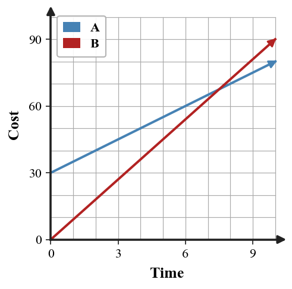
Two students analyze this system.
$$\begin{aligned}y\le -2x+10\\y\ge x+1\end{aligned}$$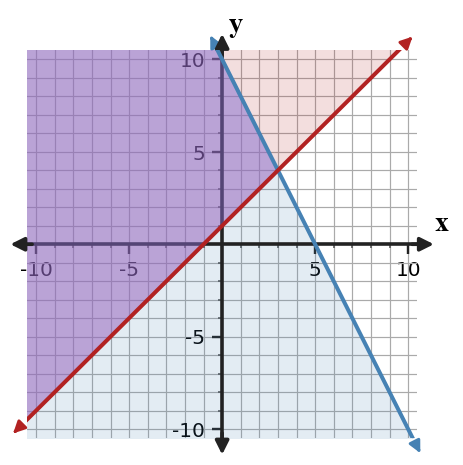
Ava graphs first. Ben tests candidate points first. Compare the two methods for finding whether $(2,4)$ and $(4,6)$ are feasible, and decide which is more efficient for only those two points.
For the system $y=-x+5$ and $y=3x-7$, what does the ordered pair where the two lines cross represent?
In the system $y=2x+5$ and $x+y=17$, which expression should replace $y$ during substitution?
For $y\gt 3x+2$, should the boundary line be solid or dashed, and should the solution region be above or below the boundary?
A point satisfies the one of three constraints but not the other two in a system of inequalities. Is the point feasible? Explain using the idea of satisfying all constraints.
Graph the system on the same axes, then state the point of intersection.
$$\begin{aligned}y=-x+6\\y=\frac{1}{2}x\end{aligned}$$
Solve by substitution. State the ordered pair.
$$\begin{aligned}x=y+2\\x+2y=11\end{aligned}$$At a fundraiser, small candles cost $4 and large candles cost $7. The group sold 63 candles for $330. Write and solve a system for small and large candles.
Identify the boundary type for $y\le \frac{1}{2}x+1$, then graph the solution region.
The graph shows the costs of two plans over time. Use the graph, then write equations for the two plans and explain what the intersection means in context.
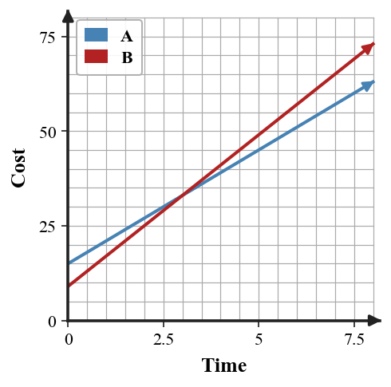
Two students analyze this system.
$$\begin{aligned}y\le -x+7\\y\ge x-3\end{aligned}$$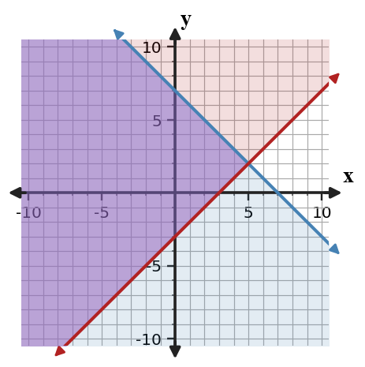
Ava graphs first. Ben tests candidate points first. Compare the two methods for finding whether $(3,2)$ and $(5,1)$ are feasible, and decide which is more efficient for only those two points.
For the system $y=\frac{1}{2}x-2$ and $y=-x+4$, what does the ordered pair where the two lines cross represent?
In the system $y=-3x+1$ and $\;5x+y=13$, which expression should replace $y$ during substitution?
For $y\le -2x+5$, should the boundary line be solid or dashed, and should the solution region be above or below the boundary?
A point satisfies the all but one constraint in a system of inequalities. Is the point feasible? Explain using the idea of satisfying all constraints.
Graph the system on the same axes, then state the point of intersection.
$$\begin{aligned}y=-2x+8\\y=x-4\end{aligned}$$
Solve by substitution. State the ordered pair.
$$\begin{aligned}y=-x+9\\3x+y=17\end{aligned}$$A club orders plain shirts for $9 each and printed shirts for $14 each. The club orders 38 shirts for $432. Write and solve a system for each shirt type.
Identify the boundary type for $y\gt -x-2$, then graph the solution region.
The graph shows the costs of two plans over time. Use the graph, then write equations for the two plans and explain what the intersection means in context.
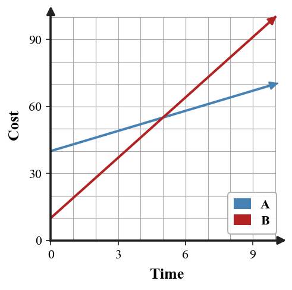
Two students analyze this system.
$$\begin{aligned}y\le -\frac{1}{2}x+6\\y\ge x-2\end{aligned}$$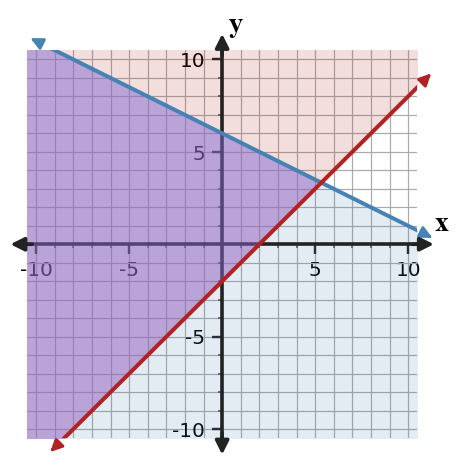
Ava graphs first. Ben tests candidate points first. Compare the two methods for finding whether $(2,2)$ and $(6,4)$ are feasible, and decide which is more efficient for only those two points.
Choose the isolated-variable equation, substitute it into the other equation, and solve for the ordered pair.
$$\begin{aligned}x=2y+1\\x+y=13\end{aligned}$$The equations $y=3x-4$ and $y=3x+6$ have the same slope and different $y$-intercepts. Classify the solution type.
Choose a test point that is not on the boundary of $y\gt -3x+2$. Substitute your point, report whether it satisfies the inequality, and use that result to choose the shaded side. Then sketch the graph.
In a graph of a system of inequalities, what does the overlapping shaded region represent?
One taxi company charges $6 plus $2.50 per mile. Another charges $18 plus $1.50 per mile. Write an equation to find when the costs are equal, then solve.
The graph shows two taxi plans. Compare solving by graphing, substitution, and elimination. Which method gives the cleanest paper-only solution, and why?
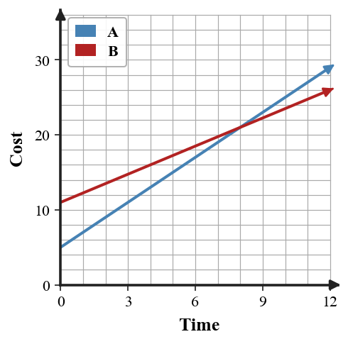
In the system $x=2y+5$ and $\;3x-y=20$, which expression should replace $x$ during substitution?
Solve the system by elimination and check your ordered pair in both equations.
$$\begin{aligned}x+2y=11\\3x-2y=9\end{aligned}$$For $y\lt x+1$, does the boundary line belong to the solution set? State yes or no and name the symbol clue.
A food truck can carry at most 60 meals. It needs at least 20 vegetarian meals. Let $v$ be vegetarian meals and $r$ be regular meals. Before graphing, estimate whether $(18,30)$, $(22,45)$, and $(30,25)$ are feasible. Justify each conclusion using the constraints.
Choose the isolated-variable equation, substitute it into the other equation, and solve for the ordered pair.
$$\begin{aligned}y=3x-2\\x+y=18\end{aligned}$$The equations $y=-2x+5$ and $y=-2x-1$ have the same slope and different $y$-intercepts. Classify the solution type.
Choose a test point that is not on the boundary of $y\le 2x-5$. Substitute your point, report whether it satisfies the inequality, and use that result to choose the shaded side. Then sketch the graph.
In a graph of a system of inequalities, what does the overlapping shaded region represent?
A streaming service charges $8 per month plus a $20 setup fee. Another charges $12 per month with no setup fee. Write and solve a system to find the break-even month.
The graph shows two streaming plans. Compare solving by graphing, substitution, and elimination. Which method gives the cleanest paper-only solution, and why?
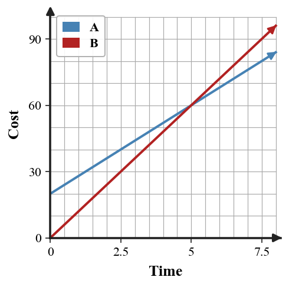
In the system $x=-y+9$ and $\;4x+2y=30$, which expression should replace $x$ during substitution?
Solve the system by elimination and check your ordered pair in both equations.
$$\begin{aligned}x+y=7\\2x-y=5\end{aligned}$$For $y\ge -3x+2$, does the boundary line belong to the solution set? State yes or no and name the symbol clue.
A storage room can hold at most 80 chairs. It must include at least 25 folding chairs. Let $f$ be folding chairs and $s$ be stacking chairs. Before graphing, estimate whether $(20,40)$, $(30,55)$, and $(35,30)$ are feasible. Justify each conclusion using the constraints.
Can a point on a solid boundary line be feasible if it satisfies the other inequality too? Explain briefly.
The graph shows two pricing plans. Write equations for the plans, solve algebraically for the break-even point, and explain how the graph supports your solution.
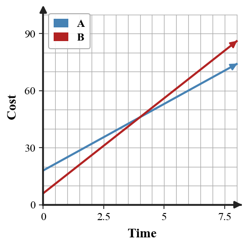
Which system is more substitution-ready: $y=2x+1$ with $x+y=10$, or $\;3x+2y=12$ with $\;5x-y=1$? Explain your choice in one sentence.
Substitute to determine the solution type, then interpret what that result means about the graph relationship.
$$\begin{aligned}y=2x+3\\2y=4x+6\end{aligned}$$The equations $y=2x-1$ and $\;2y=4x-2$ represent the same line. Classify the solution type.
Construct a strategy for graphing the system.
$$\begin{aligned}x\ge 0\\y\ge 0\\x+y\le 12\\y\ge x-2\end{aligned}$$Your strategy must explain the order you would graph boundaries, how you would handle the nonnegative constraints, and how you would identify the final feasible region.
For $x\le 4$, is the boundary vertical or horizontal?
Graph $\;2x+y\le 6$ by first rewriting the boundary in slope-intercept form.
Use equation structure to predict whether elimination will produce an ordered pair, a contradiction, or an identity; then solve to confirm the solution type.
$$\begin{aligned}2x+y=8\\4x+2y=16\end{aligned}$$A jar contains nickels and quarters. There are 44 coins worth $6.80. Write and solve a system to find the number of nickels and quarters.
Can a point on a dashed boundary line be included as a solution for that inequality? Explain briefly.
The graph shows two pricing plans. Write equations for the plans, solve algebraically for the break-even point, and explain how the graph supports your solution.
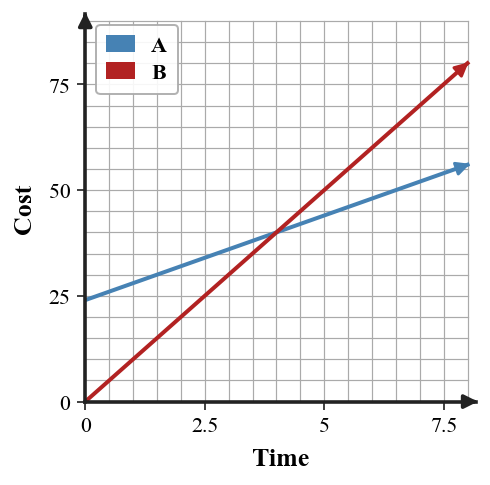
Which system is more substitution-ready: $x=4-y$ with $\;2x+y=9$, or $\;6x+3y=18$ with $\;2x-5y=7$? Explain your choice in one sentence.
Substitute to determine the solution type, then interpret what that result means about the graph relationship.
$$\begin{aligned}y=-x+5\\x+y=1\end{aligned}$$The equations $y=-x+6$ and $x+y=6$ represent the same line. Classify the solution type.
Construct a strategy for graphing the system.
$$\begin{aligned}x\ge 0\\y\ge 0\\2x+y\le 14\\y\le x+4\end{aligned}$$Your strategy must explain the order you would graph boundaries, how you would handle the nonnegative constraints, and how you would identify the final feasible region.
For $y\gt -2$, is the boundary vertical or horizontal?
First solve $\;3x-2y\gt 8$ for $y$ and explain why the inequality direction changes or does not change; then graph the inequality.
Use equation structure to predict whether elimination will produce an ordered pair, a contradiction, or an identity; then solve to confirm the solution type.
$$\begin{aligned}3x-y=5\\6x-2y=4\end{aligned}$$A drawer contains dimes and quarters. There are 50 coins worth $8.75. Write and solve a system to find the number of dimes and quarters.